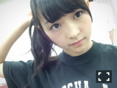

| 2014/08 22 Fri | 真夜中の園。594回目 |
8月21日
乃木坂46結成3周年の日。
あれからもう3年経つとは...
15歳だった私は18歳です。
受かると思っていなかったし、
こんなことになるとは、、
自分がアイドルになるなんて
思ってませんでした。
もしメンバーになってなかったら
芸能界を諦めて、バレエに没頭して
普通に学生してたと思います。
でも合格して、
アイドルの大変さを知って
アイドルに興味を持って
夢が出来ました。
辛くて泣きたくなったり
逃げ出したくなっても、
それでもこの活動が好きです。
4年目に突入しますが、
結成からずっと変わらない円陣の言葉
努力、感謝、笑顔を忘れず
活動していきます。
いつもお世話になっている家族、
スタッフのみなさん
マネージメントのみなさん、
そして、応援くださる
ファンのみなさん！
本当にありがとうございます。
4年目もよろしくお願いします。
腐らず3年もやってこれたのは
支えてくださるみなさんのおかげ！
幸せ者です。
毎回ブログのコメント読むのが
楽しみなのです。
最近は私を知って乃木坂46に
興味を持ったというコメントが！
ちょっと成長したかなあ？
自分自身の目標に向かって
これからも伊藤万理華らしく
やっていきます！

まいやん真夏をお祝いの図。
お誕生日おめでとう〜
このメンバーでやってこれて
本当に良かったです。
だいすき！
そんな結成3周年の昨日は
真夏の全国ツアー福岡でした！
奇跡、、！
客席から結成3周年おめでとう
の文字が見えました。
ありがとう！
さゆがニンニク3杯も入れた
豚骨ラーメンバリカタ...
美味しすぎて感動した...
細麺！！！！！
夜公演では奈々未と電話が繋がって
声を聴けて良かった。
早く復活しますように。
来てくださったみなさん
ありがとうございました！

ライブはしばらくポニーテールだな
今日は
Gザテレビジョン発売日です〜
制服着ました。
ぜひ見てねっっミロッッ
まりか
コメント(689)
2014/08/22 09:42